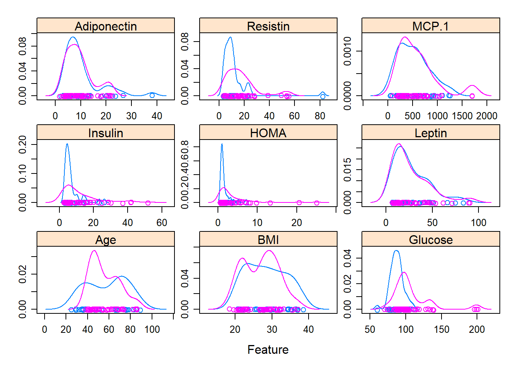

4.3 Lesson 3
2020-02-18
4.3.1 Using ‘rpart’ and the Breast Cancer Coimbra data set
# Define the filename
filename <- "2.UploadedData/dataR2.csv"
# Load the CSV file from the local directory
dataset <- read.csv(filename, header=T)
dataset$Classification<-factor(dataset$Classification, levels=1:2, labels=c("Controls","Patients"))library(rpart)
# learn tree with Gini impurity
tree.gini<-rpart(Classification~.,data = dataset)
# learn tree with information gain
tree.information<-rpart(Classification~., data=dataset,
parms=list(split="information"))Summary Information
## Call:
## rpart(formula = Classification ~ ., data = dataset, parms = list(split = "information"))
## n= 116
##
## CP nsplit rel error xerror xstd
## 1 0.38461538 0 1.0000000 1.0000000 0.10300524
## 2 0.08653846 1 0.6153846 0.8653846 0.10092601
## 3 0.03846154 3 0.4423077 0.5769231 0.09069378
## 4 0.01000000 7 0.2307692 0.5769231 0.09069378
##
## Variable importance
## Age Glucose BMI HOMA Resistin Insulin
## 25 21 12 11 9 7
## MCP.1 Leptin Adiponectin
## 6 6 3
##
## Node number 1: 116 observations, complexity param=0.3846154
## predicted class=Patients expected loss=0.4482759 P(node) =1
## class counts: 52 64
## probabilities: 0.448 0.552
## left son=2 (50 obs) right son=3 (66 obs)
## Primary splits:
## Glucose < 91.5 to the left, improve=11.586660, (0 missing)
## HOMA < 2.169985 to the left, improve= 8.039333, (0 missing)
## Age < 37 to the left, improve= 7.453390, (0 missing)
## Resistin < 13.71318 to the left, improve= 6.993164, (0 missing)
## Insulin < 10.285 to the left, improve= 6.048777, (0 missing)
## Surrogate splits:
## HOMA < 1.231021 to the left, agree=0.698, adj=0.30, (0 split)
## Age < 37 to the left, agree=0.664, adj=0.22, (0 split)
## Insulin < 4.8075 to the left, agree=0.629, adj=0.14, (0 split)
## Adiponectin < 22.12789 to the right, agree=0.612, adj=0.10, (0 split)
## MCP.1 < 532.317 to the right, agree=0.612, adj=0.10, (0 split)
##
## Node number 2: 50 observations, complexity param=0.08653846
## predicted class=Controls expected loss=0.3 P(node) =0.4310345
## class counts: 35 15
## probabilities: 0.700 0.300
## left son=4 (15 obs) right son=5 (35 obs)
## Primary splits:
## Age < 44.5 to the left, improve=6.641431, (0 missing)
## Resistin < 13.24805 to the left, improve=6.556913, (0 missing)
## BMI < 31.01992 to the right, improve=5.052061, (0 missing)
## Insulin < 3.4445 to the right, improve=3.236703, (0 missing)
## MCP.1 < 228.949 to the left, improve=2.734089, (0 missing)
## Surrogate splits:
## BMI < 31.71078 to the right, agree=0.78, adj=0.267, (0 split)
## Leptin < 31.16805 to the right, agree=0.76, adj=0.200, (0 split)
## MCP.1 < 183.26 to the left, agree=0.76, adj=0.200, (0 split)
## Adiponectin < 12.34449 to the right, agree=0.72, adj=0.067, (0 split)
##
## Node number 3: 66 observations, complexity param=0.03846154
## predicted class=Patients expected loss=0.2575758 P(node) =0.5689655
## class counts: 17 49
## probabilities: 0.258 0.742
## left son=6 (47 obs) right son=7 (19 obs)
## Primary splits:
## Age < 48.5 to the right, improve=6.897003, (0 missing)
## Glucose < 118.5 to the left, improve=4.016843, (0 missing)
## Leptin < 7.93315 to the left, improve=3.666612, (0 missing)
## Resistin < 11.92665 to the left, improve=3.111218, (0 missing)
## HOMA < 2.173469 to the left, improve=2.979801, (0 missing)
## Surrogate splits:
## HOMA < 0.6920566 to the right, agree=0.742, adj=0.105, (0 split)
## Adiponectin < 15.105 to the left, agree=0.742, adj=0.105, (0 split)
## Insulin < 3.057 to the right, agree=0.727, adj=0.053, (0 split)
##
## Node number 4: 15 observations
## predicted class=Controls expected loss=0 P(node) =0.1293103
## class counts: 15 0
## probabilities: 1.000 0.000
##
## Node number 5: 35 observations, complexity param=0.08653846
## predicted class=Controls expected loss=0.4285714 P(node) =0.3017241
## class counts: 20 15
## probabilities: 0.571 0.429
## left son=10 (20 obs) right son=11 (15 obs)
## Primary splits:
## Resistin < 13.24805 to the left, improve=7.941566, (0 missing)
## Age < 74.5 to the right, improve=5.353821, (0 missing)
## BMI < 30.13047 to the right, improve=1.622848, (0 missing)
## Glucose < 85.5 to the left, improve=1.479354, (0 missing)
## Insulin < 3.207 to the right, improve=1.464713, (0 missing)
## Surrogate splits:
## BMI < 27.9125 to the left, agree=0.714, adj=0.333, (0 split)
## HOMA < 1.408116 to the left, agree=0.714, adj=0.333, (0 split)
## Insulin < 6.283 to the left, agree=0.686, adj=0.267, (0 split)
## Age < 65.5 to the right, agree=0.657, adj=0.200, (0 split)
## Glucose < 86.5 to the left, agree=0.657, adj=0.200, (0 split)
##
## Node number 6: 47 observations, complexity param=0.03846154
## predicted class=Patients expected loss=0.3617021 P(node) =0.4051724
## class counts: 17 30
## probabilities: 0.362 0.638
## left son=12 (37 obs) right son=13 (10 obs)
## Primary splits:
## Glucose < 118.5 to the left, improve=5.231699, (0 missing)
## Leptin < 9.2319 to the left, improve=4.358824, (0 missing)
## HOMA < 2.222398 to the left, improve=3.016650, (0 missing)
## Insulin < 5.673 to the left, improve=2.666489, (0 missing)
## MCP.1 < 297.372 to the left, improve=2.089658, (0 missing)
## Surrogate splits:
## HOMA < 5.177161 to the left, agree=0.894, adj=0.5, (0 split)
## Insulin < 19.055 to the left, agree=0.872, adj=0.4, (0 split)
## Leptin < 86.37605 to the left, agree=0.830, adj=0.2, (0 split)
## MCP.1 < 905.523 to the left, agree=0.830, adj=0.2, (0 split)
## Age < 84 to the left, agree=0.809, adj=0.1, (0 split)
##
## Node number 7: 19 observations
## predicted class=Patients expected loss=0 P(node) =0.1637931
## class counts: 0 19
## probabilities: 0.000 1.000
##
## Node number 10: 20 observations
## predicted class=Controls expected loss=0.15 P(node) =0.1724138
## class counts: 17 3
## probabilities: 0.850 0.150
##
## Node number 11: 15 observations
## predicted class=Patients expected loss=0.2 P(node) =0.1293103
## class counts: 3 12
## probabilities: 0.200 0.800
##
## Node number 12: 37 observations, complexity param=0.03846154
## predicted class=Patients expected loss=0.4594595 P(node) =0.3189655
## class counts: 17 20
## probabilities: 0.459 0.541
## left son=24 (10 obs) right son=25 (27 obs)
## Primary splits:
## Age < 72.5 to the right, improve=3.334784, (0 missing)
## MCP.1 < 297.372 to the left, improve=3.104932, (0 missing)
## BMI < 32.275 to the right, improve=2.939143, (0 missing)
## Leptin < 9.2319 to the left, improve=2.939143, (0 missing)
## Resistin < 12.7652 to the left, improve=2.201398, (0 missing)
## Surrogate splits:
## Leptin < 6.76555 to the left, agree=0.811, adj=0.3, (0 split)
## Insulin < 17.356 to the right, agree=0.757, adj=0.1, (0 split)
## HOMA < 4.164391 to the right, agree=0.757, adj=0.1, (0 split)
## MCP.1 < 166.3975 to the left, agree=0.757, adj=0.1, (0 split)
##
## Node number 13: 10 observations
## predicted class=Patients expected loss=0 P(node) =0.0862069
## class counts: 0 10
## probabilities: 0.000 1.000
##
## Node number 24: 10 observations
## predicted class=Controls expected loss=0.2 P(node) =0.0862069
## class counts: 8 2
## probabilities: 0.800 0.200
##
## Node number 25: 27 observations, complexity param=0.03846154
## predicted class=Patients expected loss=0.3333333 P(node) =0.2327586
## class counts: 9 18
## probabilities: 0.333 0.667
## left son=50 (7 obs) right son=51 (20 obs)
## Primary splits:
## BMI < 32.275 to the right, improve=5.860887, (0 missing)
## Leptin < 15.02435 to the right, improve=2.744531, (0 missing)
## MCP.1 < 292.096 to the left, improve=1.158823, (0 missing)
## Insulin < 5.673 to the left, improve=0.979303, (0 missing)
## Glucose < 103.5 to the left, improve=0.854835, (0 missing)
## Surrogate splits:
## Leptin < 68.09345 to the right, agree=0.815, adj=0.286, (0 split)
## MCP.1 < 832.433 to the right, agree=0.815, adj=0.286, (0 split)
##
## Node number 50: 7 observations
## predicted class=Controls expected loss=0.1428571 P(node) =0.06034483
## class counts: 6 1
## probabilities: 0.857 0.143
##
## Node number 51: 20 observations
## predicted class=Patients expected loss=0.15 P(node) =0.1724138
## class counts: 3 17
## probabilities: 0.150 0.850Summary Gini
## Call:
## rpart(formula = Classification ~ ., data = dataset)
## n= 116
##
## CP nsplit rel error xerror xstd
## 1 0.38461538 0 1.0000000 1.0000000 0.10300524
## 2 0.10576923 1 0.6153846 0.7307692 0.09720906
## 3 0.06730769 3 0.4038462 0.7307692 0.09720906
## 4 0.01000000 5 0.2692308 0.7500000 0.09784651
##
## Variable importance
## Glucose HOMA BMI Age Leptin Insulin
## 21 14 14 13 12 12
## Resistin Adiponectin MCP.1
## 7 4 4
##
## Node number 1: 116 observations, complexity param=0.3846154
## predicted class=Patients expected loss=0.4482759 P(node) =1
## class counts: 52 64
## probabilities: 0.448 0.552
## left son=2 (50 obs) right son=3 (66 obs)
## Primary splits:
## Glucose < 91.5 to the left, improve=11.136890, (0 missing)
## HOMA < 2.169985 to the left, improve= 7.526679, (0 missing)
## Resistin < 13.71318 to the left, improve= 6.668751, (0 missing)
## Age < 37 to the left, improve= 6.601118, (0 missing)
## Insulin < 10.285 to the left, improve= 5.651907, (0 missing)
## Surrogate splits:
## HOMA < 1.231021 to the left, agree=0.698, adj=0.30, (0 split)
## Age < 37 to the left, agree=0.664, adj=0.22, (0 split)
## Insulin < 4.8075 to the left, agree=0.629, adj=0.14, (0 split)
## Adiponectin < 22.12789 to the right, agree=0.612, adj=0.10, (0 split)
## MCP.1 < 532.317 to the right, agree=0.612, adj=0.10, (0 split)
##
## Node number 2: 50 observations, complexity param=0.1057692
## predicted class=Controls expected loss=0.3 P(node) =0.4310345
## class counts: 35 15
## probabilities: 0.700 0.300
## left son=4 (29 obs) right son=5 (21 obs)
## Primary splits:
## Resistin < 13.24805 to the left, improve=5.334975, (0 missing)
## Age < 44.5 to the left, improve=3.857143, (0 missing)
## Insulin < 3.4445 to the right, improve=2.951220, (0 missing)
## BMI < 31.01992 to the right, improve=2.842105, (0 missing)
## HOMA < 0.8390145 to the right, improve=1.882353, (0 missing)
## Surrogate splits:
## BMI < 27.9125 to the left, agree=0.74, adj=0.381, (0 split)
## Insulin < 6.3155 to the left, agree=0.70, adj=0.286, (0 split)
## HOMA < 1.408116 to the left, agree=0.70, adj=0.286, (0 split)
## Leptin < 29.01205 to the left, agree=0.70, adj=0.286, (0 split)
## MCP.1 < 587.3165 to the left, agree=0.68, adj=0.238, (0 split)
##
## Node number 3: 66 observations, complexity param=0.06730769
## predicted class=Patients expected loss=0.2575758 P(node) =0.5689655
## class counts: 17 49
## probabilities: 0.258 0.742
## left son=6 (26 obs) right son=7 (40 obs)
## Primary splits:
## Age < 65.5 to the right, improve=3.569347, (0 missing)
## Leptin < 7.93315 to the left, improve=3.266637, (0 missing)
## Resistin < 11.92665 to the left, improve=2.201071, (0 missing)
## BMI < 32.48096 to the right, improve=2.187879, (0 missing)
## HOMA < 2.173469 to the left, improve=2.183601, (0 missing)
## Surrogate splits:
## Leptin < 47.14355 to the right, agree=0.697, adj=0.231, (0 split)
## MCP.1 < 207.996 to the left, agree=0.682, adj=0.192, (0 split)
## Resistin < 4.558425 to the left, agree=0.667, adj=0.154, (0 split)
## Glucose < 107 to the right, agree=0.652, adj=0.115, (0 split)
## HOMA < 17.95804 to the right, agree=0.636, adj=0.077, (0 split)
##
## Node number 4: 29 observations
## predicted class=Controls expected loss=0.1034483 P(node) =0.25
## class counts: 26 3
## probabilities: 0.897 0.103
##
## Node number 5: 21 observations, complexity param=0.1057692
## predicted class=Patients expected loss=0.4285714 P(node) =0.1810345
## class counts: 9 12
## probabilities: 0.429 0.571
## left son=10 (10 obs) right son=11 (11 obs)
## Primary splits:
## BMI < 30.0273 to the right, improve=8.485714, (0 missing)
## Leptin < 35.16835 to the right, improve=3.857143, (0 missing)
## Age < 45.5 to the left, improve=2.670330, (0 missing)
## HOMA < 0.8695296 to the right, improve=1.714286, (0 missing)
## Insulin < 5.2615 to the right, improve=1.341270, (0 missing)
## Surrogate splits:
## Age < 40.5 to the left, agree=0.810, adj=0.6, (0 split)
## Leptin < 28.041 to the right, agree=0.810, adj=0.6, (0 split)
## Insulin < 3.6505 to the right, agree=0.714, adj=0.4, (0 split)
## HOMA < 0.8695296 to the right, agree=0.714, adj=0.4, (0 split)
## Adiponectin < 6.456392 to the left, agree=0.667, adj=0.3, (0 split)
##
## Node number 6: 26 observations, complexity param=0.06730769
## predicted class=Patients expected loss=0.4615385 P(node) =0.2241379
## class counts: 12 14
## probabilities: 0.462 0.538
## left son=12 (7 obs) right son=13 (19 obs)
## Primary splits:
## Glucose < 98.5 to the left, improve=5.554656, (0 missing)
## HOMA < 1.483263 to the left, improve=2.998265, (0 missing)
## Resistin < 12.7652 to the left, improve=2.983683, (0 missing)
## Insulin < 5.923 to the left, improve=1.923077, (0 missing)
## Leptin < 16.5075 to the left, improve=1.923077, (0 missing)
## Surrogate splits:
## Insulin < 5.533 to the left, agree=0.885, adj=0.571, (0 split)
## HOMA < 1.100691 to the left, agree=0.885, adj=0.571, (0 split)
## Leptin < 9.2716 to the left, agree=0.846, adj=0.429, (0 split)
## BMI < 21.31248 to the left, agree=0.769, adj=0.143, (0 split)
##
## Node number 7: 40 observations
## predicted class=Patients expected loss=0.125 P(node) =0.3448276
## class counts: 5 35
## probabilities: 0.125 0.875
##
## Node number 10: 10 observations
## predicted class=Controls expected loss=0.1 P(node) =0.0862069
## class counts: 9 1
## probabilities: 0.900 0.100
##
## Node number 11: 11 observations
## predicted class=Patients expected loss=0 P(node) =0.09482759
## class counts: 0 11
## probabilities: 0.000 1.000
##
## Node number 12: 7 observations
## predicted class=Controls expected loss=0 P(node) =0.06034483
## class counts: 7 0
## probabilities: 1.000 0.000
##
## Node number 13: 19 observations
## predicted class=Patients expected loss=0.2631579 P(node) =0.1637931
## class counts: 5 14
## probabilities: 0.263 0.737Plot
par(mfrow=c(1,2))
plot(tree.information,main="Information")
text(tree.information)
plot(tree.gini, main="Gini")
text(tree.gini)
4.3.2 Random Forest
Run algorithms using 3 times 10-fold cross validation
# set definitions
metric <- "ROC"
control <- trainControl(method="repeatedcv", number=10,
summaryFunction=twoClassSummary,
classProbs=T,
savePredictions = TRUE, repeats=3)train Tree and RF
set.seed(7)
fit.cart.rcv <- train(Classification ~ ., data=dataset, method="rpart", metric=metric, trControl=control)
set.seed(7)
fit.rf.rcv <- train(Classification ~ ., data=dataset, method="rf", metric=metric, trControl=control)summarize accuracy of models
fit.models <- list(rpart=fit.cart.rcv, rf=fit.rf.rcv)
results <- resamples(fit.models)
summary(results)##
## Call:
## summary.resamples(object = results)
##
## Models: rpart, rf
## Number of resamples: 30
##
## ROC
## Min. 1st Qu. Median Mean 3rd Qu. Max. NA's
## rpart 0.4428571 0.6297619 0.7166667 0.6827513 0.7482143 0.8571429 0
## rf 0.6000000 0.7333333 0.8000000 0.8175132 0.9000000 1.0000000 0
##
## Sens
## Min. 1st Qu. Median Mean 3rd Qu. Max. NA's
## rpart 0.4 0.5 0.6 0.6344444 0.8 1 0
## rf 0.4 0.6 0.6 0.6577778 0.8 1 0
##
## Spec
## Min. 1st Qu. Median Mean 3rd Qu. Max. NA's
## rpart 0.2857143 0.6666667 0.7142857 0.7341270 0.8333333 1 0
## rf 0.3333333 0.6666667 0.8333333 0.7642857 0.8511905 1 0ROC curves for models
par(mfrow=c(1,2))
rocs <- lapply(fit.models, function(fit){plot.roc(fit$pred$obs,fit$pred$P,
main=paste("3x10-fold-CV",fit$method),
debug=F, print.auc=T)})Compare accuracy of models
Inspect models
## CART
##
## 116 samples
## 9 predictor
## 2 classes: 'Controls', 'Patients'
##
## No pre-processing
## Resampling: Cross-Validated (10 fold, repeated 3 times)
## Summary of sample sizes: 105, 105, 104, 104, 103, 104, ...
## Resampling results across tuning parameters:
##
## cp ROC Sens Spec
## 0.06730769 0.6730556 0.5400000 0.7563492
## 0.10576923 0.6827513 0.6344444 0.7341270
## 0.38461538 0.5290476 0.1922222 0.8658730
##
## ROC was used to select the optimal model using the largest value.
## The final value used for the model was cp = 0.1057692.#getModelInfo(fit.cart.rcv)
#getModelInfo(fit.cart.rcv)$rpart
getModelInfo(fit.cart.rcv)$rpart$parameters| parameter | class | label |
|---|---|---|
| cp | numeric | Complexity Parameter |
Inspect models
## Random Forest
##
## 116 samples
## 9 predictor
## 2 classes: 'Controls', 'Patients'
##
## No pre-processing
## Resampling: Cross-Validated (10 fold, repeated 3 times)
## Summary of sample sizes: 105, 105, 104, 104, 103, 104, ...
## Resampling results across tuning parameters:
##
## mtry ROC Sens Spec
## 2 0.8012037 0.6455556 0.7603175
## 5 0.8175132 0.6577778 0.7642857
## 9 0.8128439 0.6955556 0.7714286
##
## ROC was used to select the optimal model using the largest value.
## The final value used for the model was mtry = 5.| parameter | class | label |
|---|---|---|
| mtry | numeric | #Randomly Selected Predictors |
ROC complexity for models

4.3.3 Improve Random Forest
myGrid<-expand.grid(mtry=1:9) # numero de variaveis/colunas a considerar na RF
set.seed(7)
fit.rf.rcv.tune <- train(Classification ~ ., data=dataset,
method="rf", metric=metric,
trControl=control,
tuneGrid = myGrid)summarize accuracy of models
fit.models<-list(rpart=fit.cart.rcv,rf = fit.rf.rcv, rf.tune=fit.rf.rcv.tune)
results<-resamples(fit.models)
summary(results)##
## Call:
## summary.resamples(object = results)
##
## Models: rpart, rf, rf.tune
## Number of resamples: 30
##
## ROC
## Min. 1st Qu. Median Mean 3rd Qu. Max. NA's
## rpart 0.4428571 0.6297619 0.7166667 0.6827513 0.7482143 0.8571429 0
## rf 0.6000000 0.7333333 0.8000000 0.8175132 0.9000000 1.0000000 0
## rf.tune 0.6285714 0.7333333 0.8452381 0.8229101 0.9226190 0.9857143 0
##
## Sens
## Min. 1st Qu. Median Mean 3rd Qu. Max. NA's
## rpart 0.4 0.5 0.6 0.6344444 0.8 1 0
## rf 0.4 0.6 0.6 0.6577778 0.8 1 0
## rf.tune 0.4 0.6 0.6 0.6777778 0.8 1 0
##
## Spec
## Min. 1st Qu. Median Mean 3rd Qu. Max. NA's
## rpart 0.2857143 0.6666667 0.7142857 0.7341270 0.8333333 1 0
## rf 0.3333333 0.6666667 0.8333333 0.7642857 0.8511905 1 0
## rf.tune 0.3333333 0.6666667 0.8333333 0.7706349 0.8571429 1 0Roc curves for models
par(mfrow=c(1,3))
rocs<-lapply(fit.models,
function(fit){plot.roc(fit$pred$obs,
fit$pred$P,
main=paste("3x10-fold CV-",fit$method),debug=F,print.auc=T)})
Compare accuracy of models

Inspect models
| parameter | class | label |
|---|---|---|
| mtry | numeric | #Randomly Selected Predictors |